Human vs AI — head to head
The AI was asked to recreate the same collab concepts as Papi's existing human-made illustrations. Left: original. Right: AI.
Bakers Delight juggler

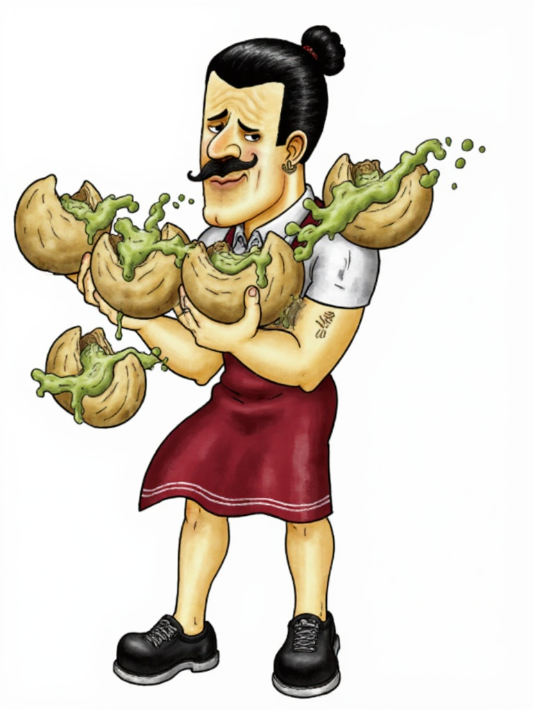
Domino's scooter delivery

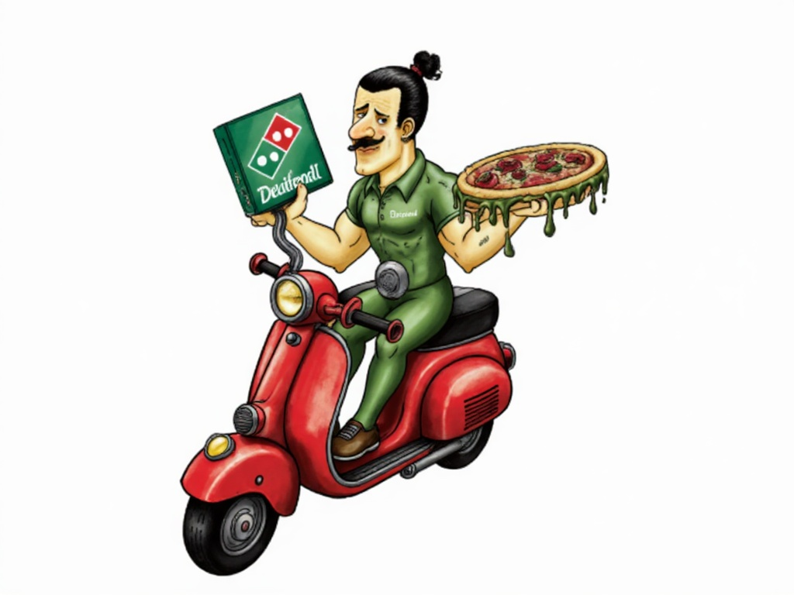
We trained a custom AI model on Papi's bespoke illustrations, then generated brand-new collab scenes from a text prompt alone. Below: AI recreations side-by-side with the original human-made art, plus 12 fresh Papi creations.
Aquiline nose, handlebar moustache, heavy-lidded brow, man-bun + red tie, gold hoop earring, pistachio-shell wristband — all carried through.
Versus days of turnaround and hundreds of dollars per commissioned piece. New scenes generate in ~15 seconds.
Brand logos/text render garbled — by design we leave logo zones blank for a designer to drop in the real mark.


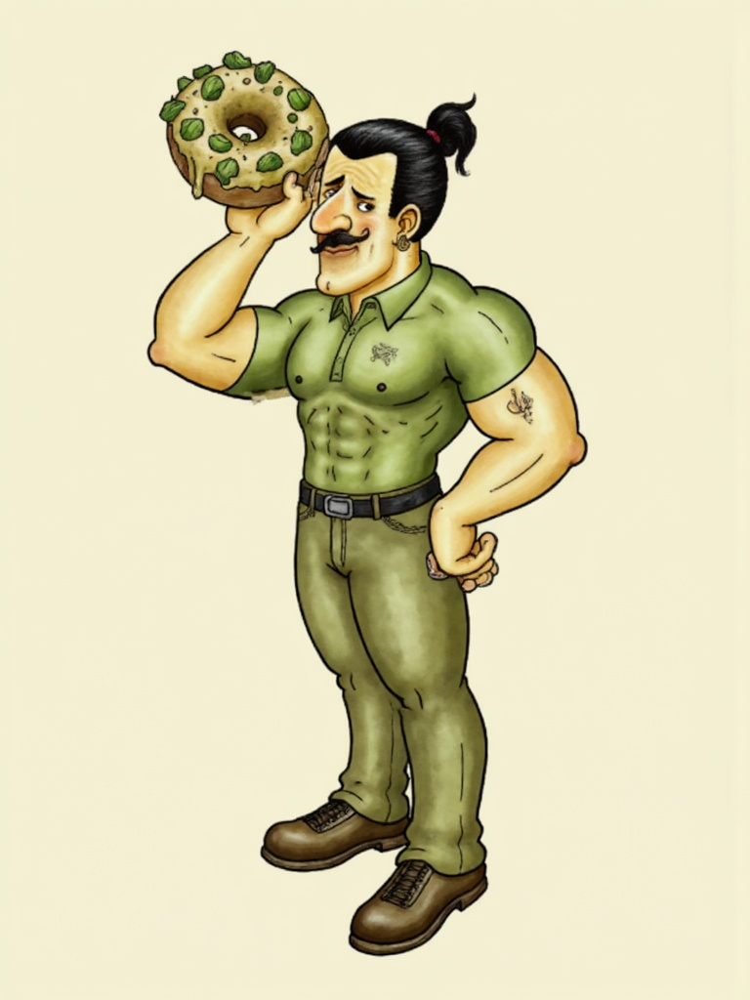
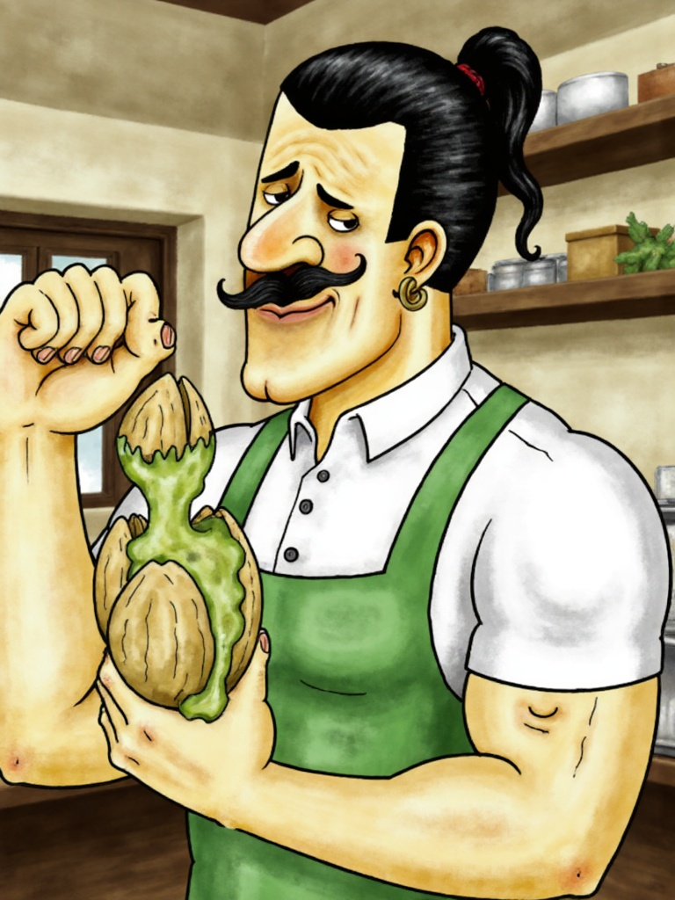

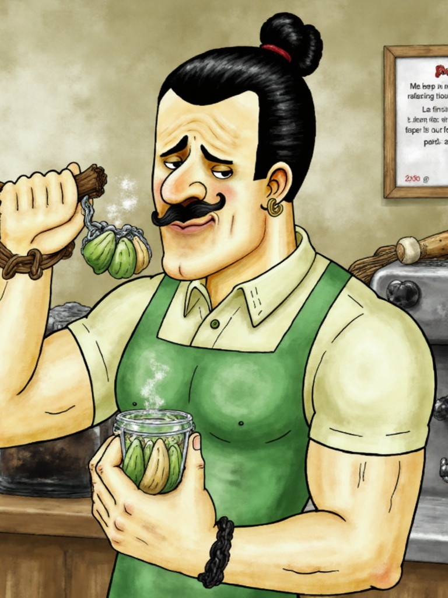

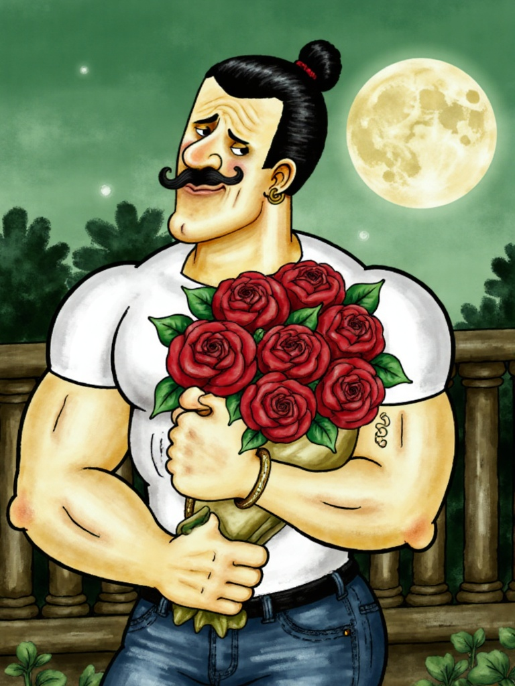
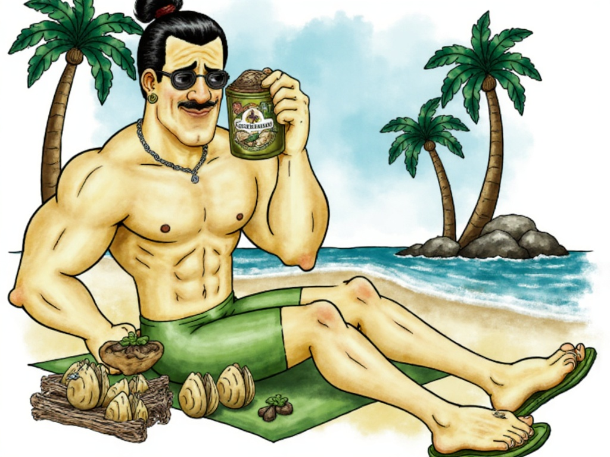
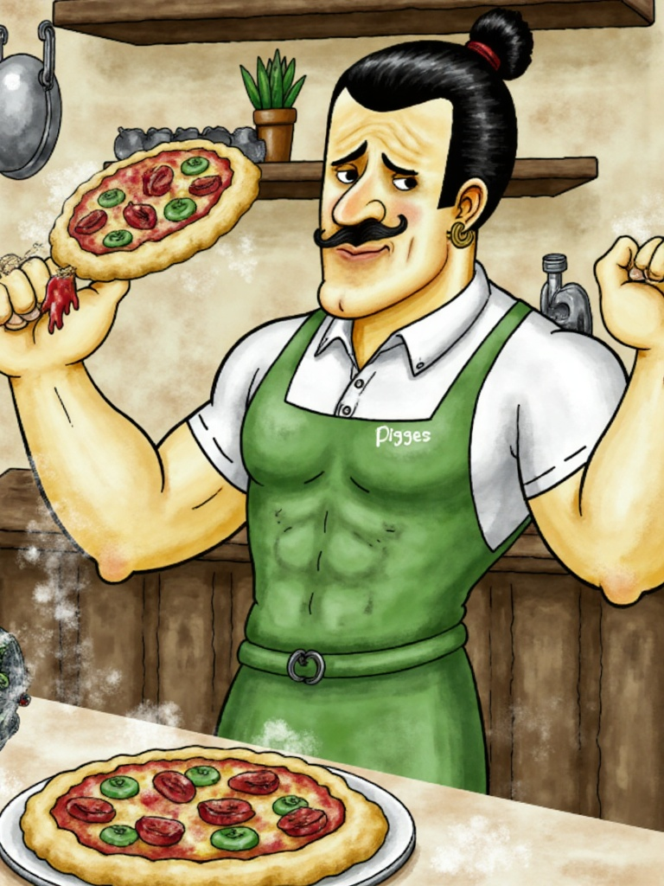
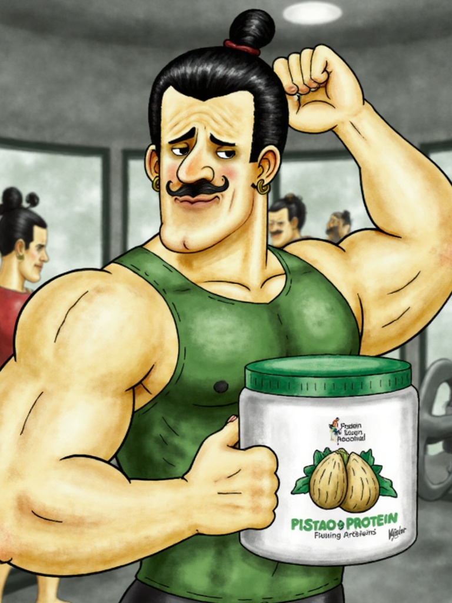
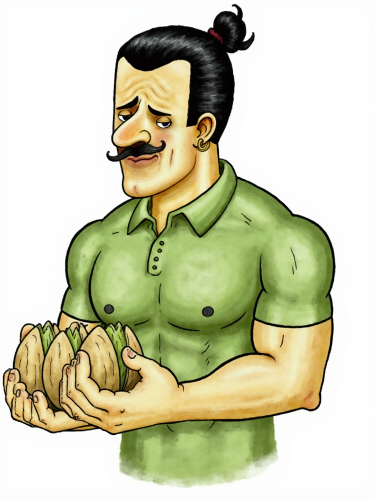
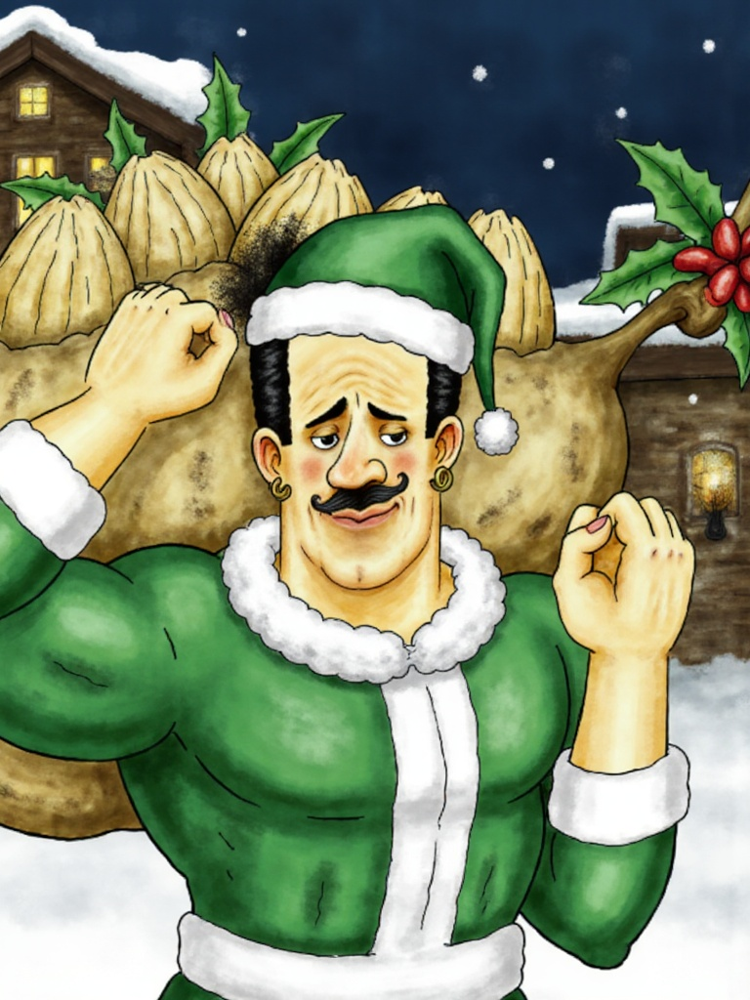
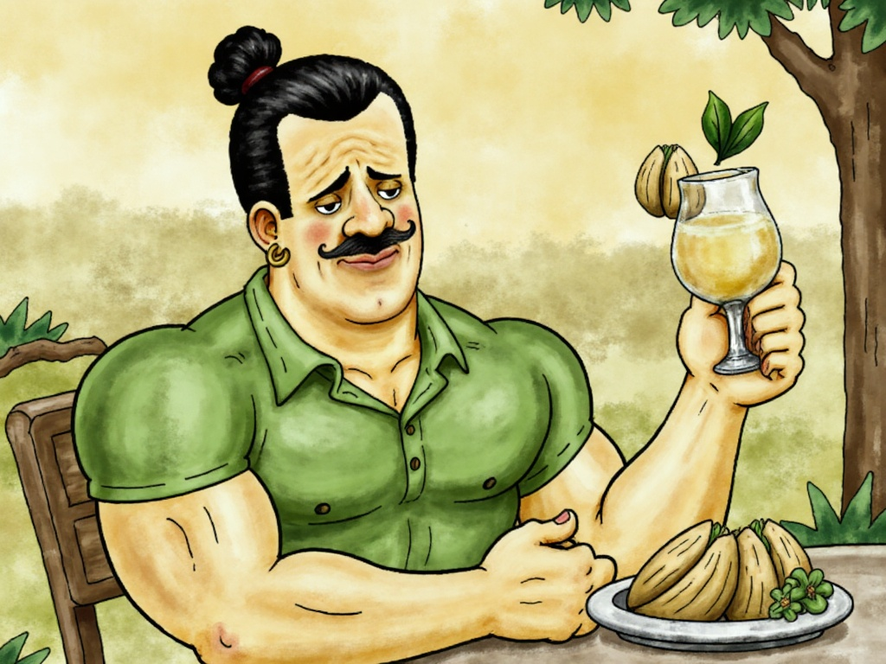
PISTACHIOPAPI trigger word.